Designing Sustainable Small Farms
The executive director of the renowned New Alchemy Institute tells how to create your own
By John Quinney
July/August 1984
Conventional agricultural ecosystems (i.e., farms) are inherently fragile: Their productivity can be sustained only if fossil fuel subsidies, in one form or another, are employed as inputs. Most farms entail, as well, other very serious environmental costs. Clearly, we need to create new food raising systems that will conserve soil, water, and nutrients ... minimize the use of fossil fuels, chemical fertilizers, and synthetic pesticides ... and lead to regionally self-reliant food systems.
Alternative farming practices-known variously as organic, biological, or bio dynamic methods-come closer to meeting such a criterion of sustainability. Nationwide, an estimated 30,000 farmers now rely on crop rotation; animal manures, legumes, green manures, mechanical cultivation, mineral-bearing rocks, and biological pest control to maintain soil productivity and tilth, supply plant nutrients, and control insects, weeds, and other pests.
Although the expanding organic movement is a positive development, in the final analysis agricultural production will be maintained only if farms are designed in the image of natural ecosystems, combining the knowledge of science with the wisdom of the wilderness. Natural ecosystems are extremely resilient and use only renewable sources of input. They have, for thousands of years, demonstrated high productivity, an impressive ability to maintain environmental quality, and quick adaptiveness to natural disturbances. Hence' they can be used as architectural and botanical models for designing and structuring our agroecosystems.
This is the approach of permaculture, the term coined by Australian Bill Mollison to describe the concept of a self-sustaining, consciously designed system of agriculture. Permaculture takes the practices of organic farming one step further, applying natural principles to design a self sustaining food-, fiber-, and energy-producing ecosystem. By weaving together the elements of microclimate, annual and perennial plants, water and soil management, and human needs, the permaculturist forms an energy-efficient, low-maintenance, high-yielding, and intricately interconnected system. The philosophy, as summed up by Mollison, is one "of working with, rather than against nature; of protracted and thoughtful observation, rather than protracted and thoughtless labor; and of looking at plants and animals in all their functions, rather than treating any area as a single product system.)
Although permaculture setups are still in the experimental stages, I believe that-with some modifications-these concepts will form the backbone of a truly sustainable agriculture. At the New Alchemy Institute in Massachusetts, we're redesigning our entire 12-acre site in order to test the economic performance of a small farm that employs biological and solar resources as its main production and management inputs. Anyone with a small parcel of land-be it a homestead plot that simply meets the food needs of a family, or a farm that must generate income-can share in similar research by completing and implementing their own designs, and reporting on those components that perform well and those that don't.
In the following pages, I'll describe the permaculture guidelines for designing small farms and homesteads and then explain the actual design process. This article is necessarily general rather than specific but my hope is that it can set you on the right road. You will have to find out most of what you need to know from other sources (such as the ones I'll mention) and from your own experience. Remember as you work that the ever changing landscapes around us have much to teach the patient observer. The challenge we face is to listen, look, and learn.
Some Sad Facts About Our Food System
Two million small farms in this country produce 20% of our food, and gardens alone supply an estimated $16 billion worth of produce each year. As heartening as this sounds, most of us still depend on food produced on large farms that are far removed from the point of consumption. We share, therefore, in the serious environmental costs associated with conventional agriculture. As in other areas of human endeavor, technological progress in agriculture has been purchased at the price of environmental degradation and the loss of natural resources. Consider, for example, some of the external costs of modern farming in this country.
*At least one-third of our topsoil has been lost to erosion, and soil on existing cropland is being reduced at an average annual rate of 8 tons per acre ... and on 23% of the total cropland, soil losses average 21 tons per acre.
* Productivity has been maintained by increased fossil fuel input in the forms of cultivation, fertilizers, and synthetic pesticides ... and the resulting soil erosion and over-fertilization are responsible for the serious degradation of our aquatic ecosystems.
* Each year, approximately one billion pounds of pesticides are used in US. agriculture, yet losses to insect pests, pathogens, and weeds exceed a third of the potential crop. In addition, pesticide abuse is responsible for environmental and public health problems, such as human poisoning and fatalities, groundwater contamination, the destruction of nontarget organisms, and the development of pesticide resistant weeds and insects.
* Agriculture accounts for at least 81% of our nation's water consumption, and in some areas, salinization and aquifer depletion are apparent.
* The conversion of agricultural land for nonfarm uses has led to large deficits in food production in some parts of the country. (Massachusetts, for example, imports 93% of its food requirements.)
* The food system absorbs 16% of all the energy used in America. Food production, distribution, and processing can be sustained only as long as fossil fuels are available and affordable.
Part 1: Design Guidelines
The primary characteristic that distinguishes permaculture systems from conventional agriculture is the emphasis on skilled design. The placement of elements in a landscape, their relationships to each other, their evolution over time, and the ability of the system as a whole to meet the realistic goals of its managers should all be taken into consideration.
The following design guidelines are derived from texts (some of which are listed in the accompanying reading list) and from our understanding of ecological principles. As such, they represent a synthesis of scientific findings and common sense, combining proven practical ideas with experimental ones. These guidelines should assist your design process, influencing your management strategies and aiding in the selection of landscape components and their relative sizes and locations.
ZONES AND SECTORS
In permaculture systems, landscape components are divided into zones and sectors to help produce an energy-efficient design. Zones separate the site according to labor needs: Frequently visited or labor intensive areas are situated close to the center of activity (which in most cases is the farmhouse), while those requiring less attention are placed farther away. For example, as shown in Fig. 1, annuals that are tended daily-such as herbs and vegetables-are located near the farmhouse ... whereas low-maintenance livestock and tree crops are situated in a more remote zone. This concept makes sense in terms of minimizing labor, and it helps ensure high yields: After all, distance invites neglect, while proximity encourages management.
In general, farm development follows the concept of zonation, as well. Distant areas are utilized only after the nearby land is put to productive use.
Sector planning divides the landscape into wedge-shaped areas that radiate from a particular point (again, most often the farmhouse) or points. From any one such center, we identify some or all of the following sectors: views, both attractive and repulsive ... noises, some pleasant and others undesirable ... winds, warm in the summer and cold in winter ... sunshine, with its seasonal variations ... and fire risks.
For each sector, planting and building schemes are designed to block or channel these external inputs. Undesirable noise can be masked with earthen banks or dense bands of evergreen trees ... cold winter winds can be blocked with windbreaks ... fast-growing trees can screen ugly views ... and deciduous shrubs and trees planted to the south can provide summer shade while still allowing the warming winter sunlight to penetrate. Looking again at Fig. 1, you can see that the roadway, poultry run, and pond have been situated so that they assist in fire control in addition to fulfilling their primary functions. Blazes coming from the southern sector would have to cross the pond, the road, and the bare ground of the poultry run before reaching the house. Placing these three components in another relationship would mean the loss of this extra control function.
RELATIVE LOCATION
Within zones and sectors, farm components-orchards, the market garden, farm ponds, the farmhouse, the barn, the woodlot, and so forth should be placed in relation to one another so as to conserve labor and energy. Each component is thus viewed relatively rather than in isolation.
An earthy illustration of this concept (from times gone by) concerns the outhouse, the woodpile, and the kitchen door. Assuming at least one daily visit to the outhouse by each member, families could virtually guarantee a regular supply of fuel stacked by the stove if the woodpile was placed conveniently between the outhouse and the kitchen door.
Or, consider the relationship between placement and elevation. The higher on a slope a pond is situated, for instance, the more potential it has to provide useful work. If the pond that irrigates your raspberries is below the garden, energy must be furnished to move that water uphill ... whereas if the pond: s located up the slope from the berry bushes to begin with, a simple gravity-fed system is all that's required. Similarly, rainwater collection from the roof of a barn that's situated upland from the farmhouse might provide a simple, inexpensive supply of household water.
Taking advantage of slope isn't a new concept, of course: Barns have traditionally been built into hillsides so that hay can easily be loaded in the loft from the high ground and manure conveniently disposed of out the low side. In other words, imported materials should enter a site at a high elevation and exports should leave downslope.
bit of thoughtful planning as to the relative locations for homestead elements can not only conserve labor and energy, but also avoid actual catastrophe. On a farm in England, I once saw three goats tethered on pasture that was adjacent to a large vegetable garden. Because no fences separated the goats from the garden, disaster was only a broken rope away. A good design would have placed the goats at least two fences away from the vegetables.
MULTIPLE FUNCTIONS FOR SINGLE ELEMENTS
Another consideration in permaculture systems is the capability of landscape elements to perform multiple functions. It's a simple statement of economics: Place the components so that they are encouraged to provide as many services as possible. For example, in the Cape Cod Ark-a solar greenhouse-type structure at the New Alchemy Institute water-filled 550-gallon tanks constructed of fiberglass-reinforced polyester provide thermal mass (see Photo 1). This is a common technique. However, we also use these ponds to produce fish, to provide warm, fertile irrigation water for vegetable crops (Photo 2), and to supply nutrients for hydroponic crops (Photo 3). Although our aquaculture/hydroponics system is still experimental, we have been able to produce up to 60 pounds of European cucumbers per plant from this setup.
The common hedge is another classic multifunctional element. Many species meet the basic requirements of providing wind protection, livestock control, and screening for privacy ... but the Siberian pea shrub (Photo 4) can do much more. It fixes nitrogen, provides nectar for honeybees, produces seeds that contain as much as 27% protein and are an excellent poultry feed, and it's an effective hedge.
Hedges, green manure crops, flowers, shade trees, and ground covers can all provide nectar and pollen for honeybees as well as serve their primary functions. Basswoods, for instance, are the equal of the oaks as shade trees but are far superior as a source of nectar and pollen. Another example is buckwheat, an excellent green manure crop for poor soils and a plant that's actively worked by honeybees. And in lightly traveled areas, the creeping thymes (Photo 5) are low maintenance, nectar-producing alternatives to lawns.
Farm ponds, too, can serve many functions. They can be used for irrigation, fish farming, aquatic crops, or watering livestock. In winter, the reflection from a pond will increase the light levels in a greenhouse located north of the water ... and (as mentioned before) a pond can play an integral role in a fire-protection scheme. Canal-like ponds can even act as barriers to livestock movement, limiting the range of sheep and chickens, for instance, while allowing ducks and geese to roam freely (Photo 6).
MULTIPLE ELEMENTS FOR SINGLE FUNCTIONS
As well as encouraging landscape elements to perform multiple functions, good design ensures that basic needs-such as water collection, fire protection, and food supply-are met in several ways. It's an agricultural insurance policy, if you like. If a gardener or farmer is dependent on a single crop for livestock feed, income, or whatever, and that crop fails, the whole enterprise is endangered ... whereas on a multifaceted homestead, that loss could be made up by another means.
Preparing for drought offers a good example. Livestock farmers often depend on pasture for both summer grazing and winter stores of hay or silage. When a drought occurs, however, the number of livestock that can be sustained on the pasture is decreased. Simultaneously, the cost of alternative feeds is driven up while the price of livestock plummets. A prudent design plans for drought by including fodder trees as a backup food source. These plantings, in turn, should be located so that they deliver other functions as well, such as summer shade, erosion control, and windbreaks. Photo 7 illustrates how poplars (the leaves and shoots of this tree are palatable to livestock) and pasture can provide a secure sheep feed, with the trees also assisting in controlling soil loss on the sloping site.
BIOLOGICAL RESOURCES
Another characteristic of permaculture systems is that, whenever possible, production and management inputs are derived from biological resources. In my opinion, this concept is the key to sustainable agriculture.
During the design process, consider plants and animals that can provide such functions as energy conservation; insect, disease, and weed control; nutrient recycling-, fertilization; and tillage. In other words, let the work of farming be performed by the nonhuman elements in the system. For example, weeding geese (Photo 8) can be regarded as grazers, consumers of windfall fruits (thus aiding in disease and pest control), and sources of fertilizer . . . in addition to providing eggs, goose down, and Thanksgiving dinners. There are numerous possibilities for using biological resources: I've listed a small sampling of these in the accompanying sidebar.
ALTERNATIVE TECHNOLOGIES
Solar, wind, and other alternative technologies are also considered in permaculture plans. Options for the small farm or homestead include solar water heaters, photovoltaic systems, solar greenhouses, wind machines, methane digesters, and small hydroelectric setups, to name a few. In choosing design components, always look first for structures and systems that save or generate energy, and only then consider those that consume energy.
Of course, even solar technologies use nonrenewable energy during their manufacture. However, a fossil fuel can be viewed either as an inoculant or as an addiction. The embodied petroleum fuels in greenhouse glazing, for example, create a biologically powered environment that, over its useful lifetime, will repay that initial energy investment many times. Fossil energy invested in automobiles, in contrast, requires ongoing fuel investments in order to serve the desired functions. That's addiction.
The same distinction can be applied to soil restoration. Soluble fertilizers applied once to worn-out, eroded soil will produce a green manure crop that's high in biomass, which in turn supplies organic matter for biologically derived fertility. In this instance, the fertilizer acts as an inoculant. Conventional farming, on the other hand, is addicted to soluble fertilizers, using them as ongoing replacements for biological fertility.
SUCCESSION
A good permaculture design also takes advantage of the fact that landscapes develop over time. Orchard trees mature, weed and insect populations change, and woodlot composition shifts. In natural ecosystems, this concept is known as succession ... and it describes the process by which, for example, an abandoned field becomes inhabited with successive communities of weeds, wildflowers, shrubs, pioneer trees, and mature species until it becomes a forest.
In conventional farming, succession is frozen at an early stage by practices such as tillage, grazing, fertilizing, and pest control ... all of which require energy-in the form of human labor and chemical fertilizers and pesticides-for operation. By allowing agricultural succession to occur, or even by consciously directing it, energy and nutrients can be conserved, soil losses reduced, and herbivore populations stabilized.
Simple successional systems also make economic sense. For example, annuals and short-lived perennials planted between the rows of a young orchard will furnish income while the orchard species mature. Photo 9 illustrates a system incorporating beans, plums, and walnut trees. The beans and plums will eventually be shaded out by the final crop, walnuts.
In some cases, understanding the successional process provides the clue to optimal land use. Many shrub communities actually create the environment for the succeeding tree species. Trees that follow pioneer species in a successional series, for instance, are often shade tolerant and, in fact, require a shaded environment for germination. Other pioneer species are nitrogen fixers. By building up the soil nitrogen level, these plants create a more fertile soil in which succeeding species can thrive. Such communities could be interplanted with desired trees to accelerate succession.
NUTRIENT RECYCLING
Farmers are in the import-export business. Nutrients, materials, and energy are imported, often from distant sources; then farm products carry embodied nutrients, materials, and energy off-site. The goal in permaculture is to convert such nutrient flows to cycles, both within the farm ecosystem and at the local and regional levels.
A good farm design provides for the recycling of livestock manure in composting systems, fish ponds, gardens, and orchards ... retrieves leached nutrients with green manure crops ... and traps and stores rainwater. At the local scale, organic refuse (such as leaves and vegetable wastes) is reclaimed from the landfills. And on the regional level, properly treated human wastes are applied to farmland as compost or sludge.
DIVERSITY
Finally, permaculture systems favor diversity over monoculture. However, because interactions among plants are both beneficial and competitive, diversity in and of itself is not as important as the right kind of diversity. Plant relationships take many forms, including competition for light, nutrients, water, and pollinators ... relative attractiveness as food sources for insects ... and chemical interactions. Photo 10 shows the competition between a hedge and a shade tree for nutrients, water, and light (the tree seems to be winning this one). As another example, in the eastern United States planting apples in the vicinity of red cedar will almost inevitably result in apples afflicted with cedar apple rust (Photo 11). Thus, less diversity-in this case, no cedars within half a mile of the orchard species sometimes results in higher productivity.
In other words, the number of elements in the landscape is not as important as the number and quality of the linkages among them. Good design maximizes the number of beneficial interactions among plants, structures, and people while minimizing or eliminating those interactions that are harmful. Such a setup is shown in Photo 12: Here grapes and blackberries are grown in close proximity in a northern California vineyard, a wise combination because the blackberries attract a parasite of a major grape pest.
Diversity can also be considered from an economic standpoint. With farmers' incomes dependent on the vagaries of the marketplace, having several salable products instead of one tends to avoid large (and possibly disastrous) fluctuations in financial returns. As prices vary, some farm commodities can be held or sold to maximize profit. Of course, once your lettuce is in the ground, it must be marketed as it matures. But livestock and pasture crops permit flexibility in selling strategy. My father's 1,300-acre farm in New Zealand, for instance, provides varying amounts of lamb, mutton, wool, beef, barley, red and white clover seed, and ryegrass seed for sale in any one year.
Depending on the relative prices, cattle can be held a year before they're slaughtered, a potential seed crop can be used for hay, or sheep can be heavily or lightly called.
Now that we've covered the basic guide lines-zones and sectors, relative location, multiple functions for single elements, multiple ele ments for single functions, biological resources, alternative technol ogies, succession, nutrient recycling, and diversity-let's move on to implementing these principles.
Part 11: The Design Process
The design process starts with the guidelines above, adds a particular piece of land and specific farmers, and then uses the following step-by step procedure to arrive at a completed small farm or homestead plan.
DEFINING GOALS
First, the person or persons operating a small farm or homestead must define realistic objectives and state them as precisely as possible. It's not enough to want "to be self-sufficient." Such vague statements immediately suggest other questions: Do you want to be self reliant in everything, including energy needs? ... Or only food? ... Or only summer vegetables?
A workable goals statement could be as follows: On this land, within five years, we want to net $20,000 a year for 40 person-hours of work per week and for a total capital outlay of less than $50,000.
No design will succeed if it's developed without such clear objectives. You must know what you want to do before you can figure out how to do it. So although you'll be tempted to avoid this issue and move on to the excitement of choosing a chicken breed or planning a crop rotation scheme, don't A good design must precede the implementation. Premature zeal often results in mistakes that may be costly later.
Ideally, for the first year you should do nothing beyond defining goals and identifying the resources at hand. Rather than rushing out to dig a pond or build a barn, spend those first seasons getting to know the land and its resources. The only exceptions to this "do little" strategy are activities that are obviously necessary or involve a minimal commitment of time and money. These could include establishing herb and salad gardens near the farmhouse, upgrading insulation and weather stripping, and harvesting firewood from dead trees.
IDENTIFYING RESOURCES
Goals can be well-defined and still be unrealistic, of course. The next step, completing a resource inventory, will give you a check with reality. Through careful observation, collect data about the on-site and local resources, and closely examine your personal resources, as well.
On-site resources. These include soils, climate, water supplies, pond sites, topography and slope, solar access, existing vegetation, microclimates, and geological features. By compiling information about these resources, you'll get to know and understand your land and its possibilities.
Collect data for this from the previous owners, soil analyses, extension agents, weather stations, local farmers, and maps obtained from the regional branch of the Soil Conservation Service and the United States Geological Survey. Also, spend time on the land. Walk it in every season, identify the plants growing in different areas, note variations in the susceptibility to frost, determine what animal populations are present, note the location of wet and dry soils, calm and windy areas, and so forth. As you carry out your resource inventory, look in particular for the following:
[1] Problems. Good design takes advantage o all site resources, and especially those generally regarded as problems. Consider these, instead, as potential opportunities. While listing and analyzing your onsite resources, do the same for apparent problems ... the eroding hillside, the wet bog in the ten-acre pasture, that huge patch of kudzu, or the rocky outcrop where you'd hoped to put a garden.
Weeds, for example, are familiar "problems." Too often, eradication immediately follows identification. A better strategy is to find a productive use for such plants. Get to know each species, look up its economic botany to see if it contains useful medicinals or essential oils, and investigate its potential as a livestock feed or a green manure crop. Learn to recognize the functions of the plant, too. The very thorniness of some weeds suggests uses: protection for young trees from livestock and wildlife, hedgerows or living fences to contain animals, or simply a deterrent to trespassers. Now some weeds are just weeds and have no merit. But if a large patch of vegetation can be profitably exploited, you're better off using it: The very fact that this species is growing abundantly means that it's well adapted to the site, climate, and soil. Therefore, any managing of this "crop" would be minimal.
[2]Landscape indicators. Learn to read your landscape. Plant communities provide clues to microclimate and the texture, fertility, and moisture of the soil. Wild blueberries, strawberries, and dandelions (Photo 13), for example, indicate acid soils ... while thistle populations (Photo 14) may increase as a result of overgrazing. Eroding soil suggests the need for alternative land-use practices, and snow deposition patterns will tell you where the sheltered and calm areas are. Large numbers of acorns in the forest may suggest a lack of wildlife ... while the presence of wolf trees (those old spreading oaks) indicates that the land was once cleared for pasture or crops, thereby permitting later trees to adopt a spreading form rather than the columnar shape seen in native forests.
In gathering this type of information, record all of your observations, even those that seem irrelevant at the time. These records, singly or in combination, will provide much of the knowledge for correct placement that's crucial to effective design.
[3]Microclimates. Identify microclimates, particularly those specific to small areas where the influence of topography, vegetation, soils, bodies of water, and structures combine to produce a significant variation from the regional climate. Low-lying land, for instance, may be susceptible to late spring frosts ... an indication that early flowering fruit trees should not be planted there. In contrast, land near a large lake may remain relatively warm in winter because of the influence of the water's thermal mass, and thus might offer an ideal orchard spot (Photo 15). South-facing forest edges tend to be windsheltered and warm ... while north-facing slopes will be cool in the spring, thus delaying the budding of species susceptible to late spring frosts. After spotting specific microclimates, you can choose plants for their adaptive ness to these areas, thereby extending the range of possible crops. Once again, observation is the key to productive use.
As you conduct your inventory of on-site resources, record the information on a series of maps. These don't have to be accurate to the half inch, but they should come fairly close to scale. Aerial photographs (Photo 16) are a good starting point, and sometimes the local town hall has maps available. You may also be able to get assistance from the local branch of the Soil Conservation Service. Nature's De sign by Carol A. Smyser (see the accompanying reading list) is an excellent source for sample maps. The book clearly illustrates how mapping aids the design process.
Local resources. Off-farm resources are almost always plentiful, and they're often free or exchangeable. These may include animal wastes, lumber scraps, contents of the local dump, seaweeds, restaurant throwaways, food-processing refuse, the expertise of skilled farmers and trades people, and local markets. At the New Alchemy Institute, for example, we have an enormous pile of leaves that we use for compost and mulch (Photo 17). Each spring and fall the pile is replenished as local people on their way to the landfill see our sign and choose to recycle their leaves rather than dump them. At Prag tree Farm in Arlington, Washington, certain weeds and edible flowers provide an unusual income simply because there's a mark 'et for these "products" at local gourmet restaurants specializing in exotic salads. If you have beekeepers in your community, they may be willing to place hives on your land, ensuring the pollination of your crops and a secure source of nectar for the bees. Bartering skills with neighbors and sharing equipment are other obvious ways of using local resources efficiently. Personal resources. Don't overestimate your own skills and assets. Carefully consider the time, know-how, and finances you have available to run a small farm or homestead, and avoid a stressful future by designing the land with those limitations in mind. Determine the amount of time you can reasonably allot to your new venture, and list the skills you already have. Then stop at this point and reexamine your objectives. Can they be attained with the resources available? If so, proceed further ... if not, go back and redefine your objectives and search for resources you might have overlooked.
FUNCTIONAL ANALYSIS
At this stage of the design process, it's critically important that you think function and not species. Consider the location and size of the landscape components, rather than their detailed composition. In other words, think in terms of "windbreak" and "orchard" and "pond" . . . not "three rows of white pine and two of autumn olive," "Liberty apples or Reliance peaches," or "hybrid tilapia or native trout."
Inputs and outputs. Efficient design is contingent upon recognizing inputs and outputs. Each component should be located so that its inputs are provided and its outputs are used. (This is the concept of relative location that we discussed in Part 1.) Compost heaps, for instance, require a mixture of organic materials, water, and air as inputs ... and they produce heat, water vapor, carbon dioxide, and humus. Ideally, then, composting operations should be located with easy access to a plentiful supply of organic matter and close to the point of use (the market garden, the orchard, the pasture, or whatever). In addition, outdoor compost heaps produce only compost ... but when the piles are placed inside a greenhouse, heat, carbon dioxide, and water vapor may be recovered as well. This could be especially important in the winter, when we could expect compost-making to help keep a greenhouse warm and provide carbon dioxide enrichment at a time when C0 2 is often a limiting factor in vegetable growth. Such a setup has recently been implemented at the New Alchemy Institute in cooperation with the BioThermal Energy Center (see Fig. 2). This winter, we'll learn how well it works.
Integration. Recognizing inputs and outputs leads easily to the concept of integration-that is, placing systems so that outputs from one become the inputs to another with little or no labor used in the transfer. Effective integration is a function of good design. The preceding example of the composting greenhouse meets this criterion. So does the fact that in eastern Europe and Asia, pig, chicken, duck, and even human manure is often used to fertilize aqua culture ponds. Photo 18 depicts an integrated system in China that clearly illustrates this concept: The outhouse is situated over the water so as to provide ease in nutrient transfer. (Because of health regulations, this specific example isn't applicable in this country.)
Recognizing function. Using each landscape component to its full advantage also requires a thorough understanding of its associated characteristics. Arguments against windbreaks, for example, are based on cropland lost, shading to the north of east-west plantings, and lower yields in the area where the windbreak and crop roots compete for moisture and nutrients. But windbreaks can also be designed to produce firewood and livestock feeds, to provide a protected site for beehives or a farm pond, and to increase crop yields in the area they shelter. In Photo 19, the dense ground growth and interspersed poplar trees of this windbreak protect the field from hot, dry summer winds. Thus, recognizing all characteristics of each landscape component creates options for sitting other elements.
Locating components. Having identified each component and all its uses, next consider locations. Take the market garden, for example: If possible, it should be located on good soil ... have easy access to a road for bringing in organic materials and moving the produce to market ... and be below a pond supplying irrigation water. The garden should also be relatively close to the farmhouse and to cold frames or to a greenhouse that'll supply it with transplants. It should be near your compost and mulch storage sites (these will preferably be placed above the garden so that heavy organic matter can be moved downhill). A naturally sheltered site is desirable, too, although the use of windbreaks can transform a windy spot into a calm one. And if you intend to run a roadside stand, the garden should boast road frontage that has ample parking for customers.
As you can see, sitting any one farm component is contingent on its relationship to the others. As an aid to juggling the pieces, you might want to make cardboard cutouts and move them around your map, considering the advantages and drawbacks of various locations. Each farm will require different pieces, but you'll probably want to include many of the following: farmhouse, barn, windbreak, hedgerow, chicken house, aquaculture pond, greenhouse, water storage tank, orchard, market garden, kitchen garden, compost pile, mulch storage area, potting shed, tool shed, equipment storage, beehives, and worm beds.
Working the design. Next, for each potential plan you devise, take yourself through the day-to-day farm activities to determine the relative ease (or difficulty!) with which they can be performed. See yourself feeding the chickens, applying the compost, harvesting the produce, and storing and distributing hay. This exercise quickly points up poor placement and identifies conflicting uses of a particular location. Change the design as needed and repeat the exercise until your design "works." At this point, go back again and reexamine your objectives and available resources. This last step often leads to further modifications. Rework the design as much as necessary until you have it right.
SPECIES AND SPECIFICS
Once the basic design is completed, you can move on to considering specific crops, species, cultivars, and breeds. (Although I'll limit discussion here to plant choices, you'll likely be selecting both plant and animal species.) If, for example, you have a functional requirement for a fast-growing deciduous windbreak shorter than 20 feet high, look for plants that meet this particular need, such as the willows.
Species selection. Choosing from a large number of candidate species can be a lengthy task. For each plant, you'll need information about its tolerances-to different types of soil, to drought, to browsing animals, and to temperature extremes-and its functions (as a nitrogen fixer, windbreak, livestock forage, and so on). The required functions are then matched with the site characteristics and species tolerances.
One design toot that can aid you with species selection is a plant species matrix. The Future Is Abundant, a text put out by the editors of Tilth (see the reading list), contains an excellent matrix that lists 300 plants and their characteristics. With such a chart, you can easily select plants by attributes. You can, for example, locate all the nitrogen fixing plants that tolerate cold winters, thrive on acid soils, and make good hedgerows. As the interest in permaculture systems grows' more and improved plant species matrices are being developed.
While you're choosing the proper cultivars for your property, you might want to consider the following suggestions:
[1] Orchards. The soil of your chosen site will dictate species and rootstock options to some degree. The climate of your area will further narrow the range of suitable cultivars. (If your region experiences early spring frosts, you'll naturally want to select late-flowering species.) Choosing only disease- and insect-resistant varieties will limit your possibilities as well: For example, Liberty, Priscilla, and Nova Easygrow apples have a reputation for disease resistance, whereas many of the common apple cultivars are more susceptible.
You'll also need to decide what the understory of your orchard will be. It could provide forage for geese and ducks; contain nitrogen fixing clovers; grow green manure crops; provide a habitat for predatory and parasitic insects; or even produce strawberries, raspberries, vegetables, and herbs. Photo 20 illustrates a peach orchard with an understory of nitrogen fixing white clover ... while in Photo 21, vegetables have been intercropped with the fruit trees. If you plan on using large equipment in your orchard, your understory options will obviously be reduced.
Give some thought to protecting your crop, too: Solar-powered elec tric fences or browse-resistant hedgerows may be needed to deter deer or other wildlife.
[2] Market gardens. When selecting species for the market garden,' you'll want to consider various crop rotations, successional planting schemes for continuous yield, local market demand for specific crops, and fertility maintenance. You may reject some crops as too labor intensive and others on the basis of your soil and climate. (Remember, though, that by using cloches, plastic mulches, and slit row covers, you can extend the growing season for those slow-growing species.)
[3] New crops. You may want to try some uncommon crops as a long term investment. Working with unfamiliar species does involve risks: In many cases, the cultural requirements have not been clearly defined, susceptibility to insects and disease is unknown, yield data may be sketchy, and the markets are uncertain. However, new crops are successfully introduced all the time, and folks who harvest a crop of the potential money-makers first tend to realize the most profit. For example, farmers who planted kiwi fruit in New Zealand in the mid70's have made higher earnings than their more cautious neighbors.
Some current candidates for such "stock market plantings" could include mulberries (Photo 22), juneberries, hardy kiwi, persimmons, nut trees, papaw, bamboo, paulownia, nut pines, truffles, ginseng, wild rice, and water chestnuts.
Management constraints. You may include many different species and cultivars in your design, add several ponds and a mix of livestock, and end up with a farm plan that includes a bit of everything. But a good design minimizes management requirements ... and such a diversified small farm may fail simply because the plan's too complicated to coordinate. So as you're selecting species, ask yourself. Can you realistically manage all the species of fruit trees, the diverse market garden, chickens, ducks, geese, sheep, honeybees, pastures, and hedges you may have included? If the answer's no, then simplify the design.
In general, a homestead can be more diverse than a commercial farm operation. However, there is one possible exception. If applying ecological principles and common sense in a farm-scale design leads you inexorably to a diverse and complex design, then you may want to incorporate management by a community of farmers. Because the components on any farm are linked by flows of energy, nutrients, and materials, managing such a system will demand close cooperation from the individuals involved. The orchardist and beekeeper, for instance, must cooperate so that noncrop nectar and pollen plants don't compete with fruit trees for the honeybees' services ... the shepherd and orchardist must coordinate grazing schemes so that sheep aren't introduced into the orchard until the trees are large enough to escape browse damage ... and so on. In essence, the large, diverse situation creates an ecological argument for community farming, with cooperation among farmers demanded by the inherent characteristics of the landscape.
STAGING
Finally, the overall design is complete. Functions and species have been mapped and you know what goes where and why. But you're not quite finished with the paperwork. You need an implementation plan-a timetable defining the sequence in which farm components will be established.
Some components, of course, must be operational before others can function. Fences or hedgerows must be functional before animals are let loose ... and the orchard should be blooming before beehives are introduced.
Also keep in mind that components closest to the hub of activity should be established first. Implementation always begins at the back door and moves outward.
In addition, the sequence of events should mirror your skill development. Start small and simple, then add more complex components as your skills and confidence increase.
BUDGETING
Although you've been planning within a budget all along (right?), at this point you must sit down and allocate where each dollar and cent is going. True, prospective economic returns often differ from actual dollars in the pocket ... still, with the staged design as a reference, you must prepare a "best guess" budget that includes capital and operating costs for each year. Enterprise Farming (see the reading list) contains useful sample budgets for small farm operations, and your neighboring farmers and local extension agents may also be of help. Because most of the available data apply to conventional farms, you'll probably need to estimate costs for many of the components of a permaculture operation.
It's possible that preparing this detailed budget may force you to modify crop choices and management strategies ... perhaps by eliminating some costly practices and adding more profitable crops.
HOME, SWEET HOME You're done! Remember, though, that the design process is just that-a process. The final design is not cast in concrete, but is rather a preliminary tool to evolve from. However, because you've consid ered your site in its entirety and have followed a process that repeat edly checks your objectives and resources, you should have avoided serious mistakes. As the land matures over the years, you'll want to add some elements and perhaps modify others. So during the im plementation process, remain mindful of your work, let the landscape teach you at its own speed ... and take satisfaction in the fact that in your own backyard, you've taken a step toward making a self nurturing agricultural system become a reality. EDITOR'S NOTE: The New Alchemy Institute is a 15-year-old non profit organization that conducts research, educational, and outreach pro grams promoting food, energy, and shelter systems that are envi ronmentally sound and economically efficient. Tax-deductible member ship in the institute is $35 per year and includes a subscription to the New Alchemy Quarterly (which reports on the work at the institute and contains articles by other researchers in biological agriculture and appropriate technology), a 20% discount on all institute publications and courses, and free admission to the Farm Saturday programs. To become a member, send a check or money order to New Alchemy Institute, Dept. ME, 237 Hatchville Rd., East Falmouth, MA 02536. Or, to receive more information, send a postcard with your name and address.
Biological Resources
Biological resources-like any other resource-provide an available means of support. By deriving production and management inputs for the small farm from biological sources whenever possible, the grower will need less human labor and his or her dependence on chemical fertilizers and pesticides can be all but eliminated. This concept may well be the key to creating a sustainable agricultural system. The potential for using biological inputs is enormous, and the ideas in the following paragraphs merely scratch the surface. Keep in mind, though, that many of the systems described below are still experimental and should be regarded as such.
Livestock Guard Dogs: For thousands of years, livestock raisers in Europe and Asia have employed various breeds of dogs to deter predators ... and some of these canines are now being introduced to the United States. Protection dogs offer an attractive option to shooting or trapping predators, nonselective poisoning, or costly physical barriers. The animal pictured in Photo A is a Maremma, a friendly breed that's considered well suited to small farm operations.
Weeding Geese: Geese are selective grazers, avoiding broad leaved plants and favoring grasses. In orchards, the waddling weeders will graze understory grasses, keep mulches free of weeds, consume windfall fruits (which are often a source of pest problems), and furnish manure. Geese have also been used for grass control in gardens and nurseries. You can have them weed strawberries (until the fruit is ripe!), raspberries, tomatoes, potatoes, onions, garlic, carrots, and mint, among other crops. The Brown Chinese and White Chinese geese in Photo B are harvesting their dinner from between the bean rows. These "biological herbicides" have the advantages of self propulsion; edibility, and manure production that their synthetic counterparts lack.
Chickens: In newly planted crops, chickens can be disastrous, scratching out young transplants and disturbing carefully placed mulches. However, in orchards or in early spring and late fall gardens, the common cluckers can be used to control insect and weed pests, destroy weed seeds, and increase the nitrogen content of the soil. Chickens housed in movable cages can be rotated through a garden to help prepare beds for successional crops ... and if you. employ slit row covers, cloches, or hot caps in your growing ground, these devices can serve the added function of protecting crops from foraging poultry. The hen in Photo C is munching on caterpillars of the white cabbage butterfly.
Ducks: Ducks are expert at searching out and devouring insects and slugs. However, the quackers sometimes damage vegetables especially leafy greens-so you should proceed with caution when trusting your garden to them.
Earthworms: Earthworms improve the aeration of the soil, rapidly recycle organic matter, and make nutrients readily availa ble to plants. Yield increases of up to 100% have been recorded following wriggler additions to worm-deficient soils.
Manure Worms: The small red manure worm produces a superb humus from its castings. Worm beds offer a good method for recycling vegetable scraps, as they provide an excellent soil amendment.
Birds: Recent farming literature may lead one to believe that birds are universally destructive. However, in the 20's and 30's many winged species-including woodpeckers, purple martins, barn swallows, nuthatches, and chickadees-were recognized as integral to pest control programs. Today in apple orchards in Nova Scotia, downy and pileated woodpeckers are used to destroy as much as 50% of the over wintering codling moth population. The essential prerequisite for any feathered aid is a suitable habitat for the birds. Woodpeckers, for instance, need nesting sites in dead trees in adjacent forests.
Biological Pest Control: In recent years, many new nonchemical pest controls have been introduced. Disease organisms are now available for controlling Japanese beetles, codling moths, corn earworms, gypsy moths, mosquitoes, and insects in the lepidoptera family. Several fungi have been tested for controlling plum curculio, Colorado potato beetles, cabbage loopers, and European corn borers. Some nematode species are effective against grasshoppers, Mexican bean beetles, tent caterpillars, and codling moths. Literally hundred of parasitic and predatory insects have been identified as well. Photos D and E picture two familiar pest predators: the praying mantis and the garden toad.
Habitat Enhancement: Biological control can be enhanced by manipulating noncrop vegetation. For example, establishing plots of umbelliferous plants-such as the wild carrot, parsley, parsnip, Queen Anne's lace, and caraway-will attract hordes of parasitic wasps that use these flowers as food sources. Even encouraging a spider's web can be a means of pest control (Photo F) ... in this case, for the common whitefly. Flowers adjacent to a backyard garden attract beneficial insects (Photo G): In the Cape Cod Ark at- the New Alchemy Institute, we've used scented geraniums as host plants for the whitefly and its parasite, Encarsia formosa. (We add homemade yellow-orange sticky traps in the spring-Photo H-to complete our year-round pest-control system.)
Nitrogen-Fixing Plants: In addition to the common legumes, more than 160 nonleguminous nitrogen-fixing plants have been identified. These shrubs and trees can make available up to 300 pounds of soil nitrogen per acre per year. Common members of this group include the alders, Russian and autumn olives, and the sweet fern and bayberry. The white nodules of the root system of the autumn olive (Photo I) indicate the site of nitrogen fixation. Such plants can be used in a variety of ways to substitute for bag nitrogen: The herbaceous species are often included in crop rotations or as orchard understories ... while shrubs and small trees can be interplanted with fruit, nut, or forest trees.
Allelopathic Plants: Many plants produce substances that are toxic to their competitors ... conducting, in essence, their own chemical warfare. Certain varieties of wheat, rye, barley, sorghum, and sudan grass, for example, can be grown between orchard rows or in gardens, and the clippings from these varieties can then be used as weed-suppressing mulches.
Mycorrhizal Plants: A relationship between plant roots and mycorrhizal fungi has been recorded in many higher plants, especially the forest species. This association is symbiotic: The fungi supply phosphorus and other nutrients to the plant in exchange for carbohydrates. Plants inoculated with selected strains of mycorrhizae typically produce high yields in low phosphorus soils. Often the fungi can be introduced to new plantings by adding soil taken from a vigorous stand of the same species.
A Reader's Guide to Sustainable Agriculture
The following list was carefully selected from a large bibliography and contains titles that are most relevant to the issues raised in this article. Your local library probably has some of the volumes ... or, if you prefer, you can order them from the sources given. A full bibliography that contains 250 titles-as well as magazine and journal listings and suppliers of equipment, beneficial insects, and plants-is available from the New Alchemy Institute (at the address given at the end of the article) for $8. 00 postpaid. (Please allow 4 to 6 weeks for delivery.)
Permaculture One by Bill Mollison and David Holmgren (Corgi Books, 1978) and Permaculture Two by Bill Mollison (Tagari Books, 1979). These volumes are the best introduction to commonsense design inspired by ecology. Both are available from the International Tree Crops Institute, U.S.A., Inc., P.O. Box 666, Winters, CA 95694. You can obtain Permaculture One-while the supply lasts-for $12.50 postpaid ... and Permaculture Two for $10.95 postpaid.
Agroecology: The Scientific Basis of Alternative Agriculture by Miguel A. Altieri (self-published, 1983). This is the best text to date that describes the science behind ecological agriculture. It's available from the author (1050 San Pablo Ave., Albany, CA 94706) for $11. 00 postpaid.
The Future Is Abundant edited by Lany Korn, Barbara Snyder, and Mark Musick (Tilth, 1982). Although this resource guide to the tools and information needed for farm design is geared toward the Pacific Northwest, it's worth buying just for its plant species matrix. Order it from Tilth, 4649 Sunnyside North, Seattle, WA 98103 for $12.95 postpaid.
Nature's Design by Carol Smyser (Rodale Press, 1982). This is a good text for teaching the design process for home landscaping. You can buy it for $22.95 (shipping is included with prepayment) from Rodale Press, 33 E. Minor St., Emmaus, PA 18049.
The One-Straw Revolution by Masanobu Fukuoka (Rodale Press, 1978). This well-known text is valuable for its philosophical approach to agriculture. It's available from Rodale Press at the preceding address for $9.95 postpaid if payment accompanies order.
Principles of Environmental Science by K E. F. Watt (McGrawHill, 1972). This text is aimed at the college-level student. It'll cost you $44.50 postpaid from McGraw-Hill, Princeton Rd, Hightstown, NJ 08520.
The Unsettling of America by Wendell Berry (Sierra Club Books, 1977). If you haven't read this book, you should. Wendell Berry is an eloquent voice for small farming and right livelihood You can obtain it from Random House, Inc., 400 Hahn Rd, Westminster, MD 21157 for $14.95 plus $1.00 for shipping and handling per book.
Enterprise Farming edited by Peter Hemingson (The Ford Motor Company, 1983). This book, which is geared to the small farm, is especially valuable for planning budgets. You can get a copy at no charge from your local participating Ford Tractor Dealer or from the agricultural extension service ... or order it for $2.50 from Ford Tractor Book, P.O. Box 10138, Des Moines, IA 50340.
The New Farm published seven times a year by the Regenerative Agriculture Association, 222 Main St., Emmaus, PA 18049. This magazine is an excellent source for information about organic farming. A year's subscription costs $15.00.
 Fig. I adapted from Permaculture Two by Bill Mollison. Copyright 1979 by Bill Wilson. Reprinted with permission from Tagari Books, P.O. Box 96, Stanley, Tasmania, 7331, Australia. |
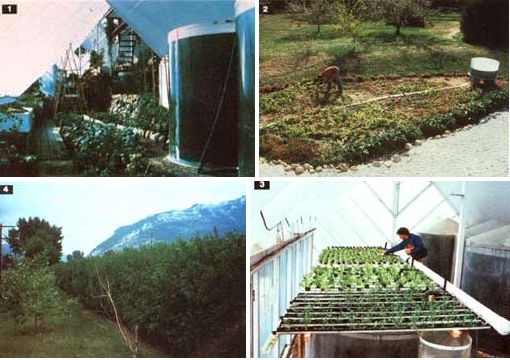 |
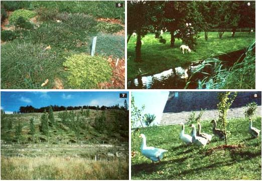 |
|
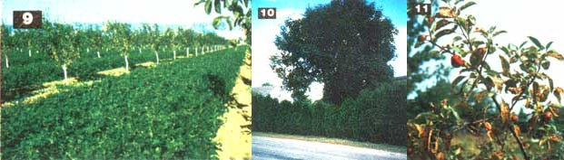 |
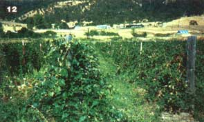 |
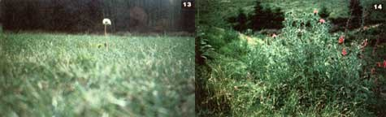 |
|
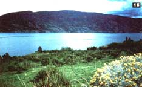 |
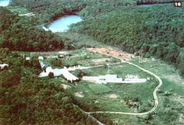 |
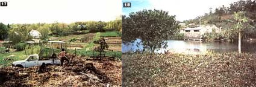 |
 |
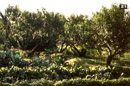 |
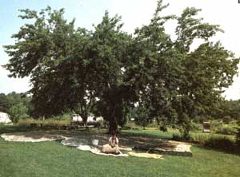 |
|
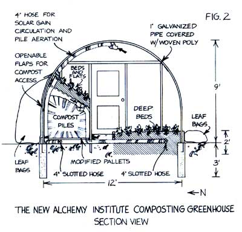 |
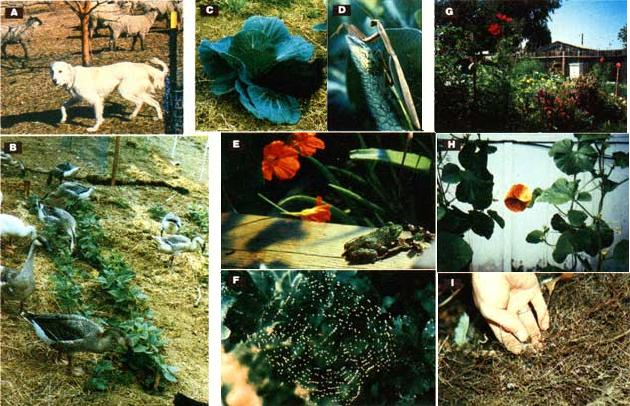 |
|